Importing alevin scRNA-seq counts into R/Bioconductor
Michael I. Love, UNC-Chapel Hill, website
Avi Srivastava, New York Genome Center, website
Source:vignettes/alevin2bioc.Rmd
alevin2bioc.RmdWorkshop Description
In this workshop, we will demonstrate basics of quantification of droplet-based scRNA-seq reads using alevin, producing a count matrix for import into Bioconductor using tximeta, in the end producing a SingleCellExperiment object. We will also demonstrate the ability of alevin to provide quantification uncertainty on the count matrix, and visualize this uncertainty across cells.
We plan the workshop to be an instructor-led live demo with time for questions and interactions with the participants. We imagine that the target participant for the workshop probably has some dscRNA-seq data, and knows about e.g. generating a count matrix with CellRanger. We will show an alternative quantification pipeline and explain its benefits. We will show how to hand off the data object to common single-cell workflows in Bioconductor (OSCA) as well as to Seurat.
Workshop goals and objectives
Learning goals
- understand how scRNA-seq quantification methods work and understanding their limits
- describe how Bioconductor’s classes including SingleCellExperiment facilitate reproducibility through tracking metadata on the samples/cells and the genomic ranges
Learning objectives
- see code to run alevin, quantifying scRNA-seq reads to make a gene count matrix
- import scRNA-seq count data including genomic ranges
- manipulate a SingleCellExperiment
- examine scRNA-seq counts over cell labels
- examine uncertainty estimates for counts
- hand-off to OSCA workflows
- hand-off to Seurat workflow
Introduction
alevin is a fast end-to-end pipeline to process droplet-based single-cell RNA sequencing (dscRNA-seq) data, generating per-cell gene count estimates by performing cell barcode detection, read mapping, and unique molecular identifier (UMI) deduplication.(Srivastava et al. 2019). It extends the methods in the Salmon software (Patro et al. 2017), and is distributed as part of Salmon.
The data we will use today is generated from the peripheral blood mononuclear cells (PBMCs) of a healthy donor which have been sequenced and made public by 10x Genomics (referred as PBMC_1k V2 Chemistry) (“1k Pbmcs from a Healthy Donor (V2 Chemistry),” n.d.). These cells are well characterized, and so we will examine counts for cells grouped into cell types labelled by marker genes.
Running alevin
In order to run alevin, we must first generate an index of the reference sequences. For this experiment, we used the latest GENCODE human reference transcripts (Frankish, GENCODE-consoritum, and Flicek 2018), which happen to be version 33 (in April 2020 version 34 was released). The index of the reference transcripts (FASTA) and a file linking transcripts to genes can be created following the instructions here. (An alternative is to also include genome sequence that does not fall into transcripts as part of the index. Details for creating such an index are provided here.)
Finally, running alevin once an index has been created is just a single command, and detailed instructions can be found here. In this case, --chromiumV3 was used and --numCellBootstraps 30 in order to generate bootstrap inferential replicates. A simplified version of the command is shown below:
salmon alevin -l ISR \
-1 sample_L001_R1_001.fastq.gz \
-2 sample_L001_R2_001.fastq.gz \
--chromiumV3 -i index -p 12 -o sample --tgMap txp2gene.tsv \
--numCellBootstraps 30Here, -1 gives the CB+UMI file and -2 gives the read sequence file. Multiple files can be provided to the arguments -1 and -2 with a single space between the files, as long as they are given in the same order to the two arguments.
Even more details about alevin arguments can be found here.

For the rest of the tutorial we will focus on importing data into R/Bioconductor. The output directory of running alevin on the PBMC sequence data is included in this workflow package in the extdata directory. alevin took about 14 minutes to quantify 33 million reads from around 1700 cells. 30 bootstrap inferential replicates were generated, summarized to sparse inferential mean and variance matrices (discussed later).
Importing alevin data with tximeta
We will use tximeta to import the alevin counts into R/Bioconductor. The main function tximeta reads information from the entire output directory of alevin or Salmon in order to automatically detect and download metadata about the reference sequences (the transcripts) (Love et al. 2020). It should work “out of the box” for human, mouse, and fruit fly reference transcripts from GENCODE, Ensembl, or RefSeq
First we specify the path where the quantification data is stored. In this tutorial, the data is stored in an R package, so we need to use the system.file command.
Note: For typical use, you would not use system.file, but would just specify the path to the directory of the output from alevin.
Second note: when sharing alevin or Salmon datasets, make sure to share the entire output directory (you can zip or tar the directories to make them into a single share-able file).
# normally you just would use: # dir <- "/path/to/alevin/output" extdata <- system.file("extdata", package="alevin2bioc") dir <- file.path(extdata, "pbmc_1k")
We make a vector called files (for alevin this will point to just a single file, but with Salmon usually one would import multiple files at a time).
files <- file.path(dir, "alevin", "quants_mat.gz") file.exists(files)
## [1] TRUEWe can import the alevin quantification using the following call to tximeta. The extra argument to alevin will filter out cells based on alevin’s post-quantification quality control methods (see paper for details).
## importing quantifications## reading in alevin gene-level counts across cells with fishpond## filtering down to 1142 cell barcodes## reading in alevin inferential variance with fishpond## found matching transcriptome:
## [ GENCODE - Homo sapiens - release 33 ]## building TxDb with 'GenomicFeatures' package## Import genomic features from the file as a GRanges object ... OK
## Prepare the 'metadata' data frame ... OK
## Make the TxDb object ...## Warning in .get_cds_IDX(mcols0$type, mcols0$phase): The "phase" metadata column contains non-NA values for features of type
## stop_codon. This information was ignored.## OK
## generating gene ranges
## generating gene ranges
## fetching genome info for GENCODEWe can see as it was importing that it automatically detected we are working with data quantified using GENCODE’s Homo sapiens reference transcripts, release 33. The transcript metadata was added programmatically to the output (this object, se). tximeta is also written in such a way that it will avoid unnecessary downloads and parsing of files – it will first attempt to find a cached version of the metadata, to avoid re-downloading or re-parsing these files.
tximeta returns a SummarizedExperiment (Lawrence et al. 2013). We can easily convert this object into a SingleCellExperiment (Amezquita et al. 2020) which has specific slots designed for single-cell experiment data.
suppressPackageStartupMessages(library(SingleCellExperiment)) sce <- as(se, "SingleCellExperiment")
The SingleCellExperiment object is used widely across Bioconductor packages (as you may already know), and so the code up to this point can be used as an entry point into other Bioconductor single-cell workflows. For more details on working with SingleCellExperiment objects, one can consult the following online book: Orchestrating Single-Cell Analysis with Bioconductor (Amezquita et al. 2020).
The data is now available as assays in sce. We can see what is available:
assayNames(sce)
## [1] "counts" "variance" "mean"And we can access individual gene-by-cell data by pulling out a particular assay. Note that, due to the use of EM (which avoids discarding multi-mapping reads), we will have some fractional counts in the counts matrix.
assays(sce)[["counts"]][1:20,1:4]
## 20 x 4 sparse Matrix of class "dgCMatrix"
## AAGACAACAGATCACT CAGGTATGTCAGTCTA TATCTTGTCCATCTCG
## ENSG00000223972.5 . . .
## ENSG00000227232.5 . . .
## ENSG00000278267.1 . . .
## ENSG00000243485.5 . . .
## ENSG00000284332.1 . . .
## ENSG00000237613.2 . . .
## ENSG00000268020.3 . . .
## ENSG00000240361.2 . . .
## ENSG00000186092.6 . . .
## ENSG00000238009.6 . . .
## ENSG00000239945.1 . . .
## ENSG00000233750.3 . . .
## ENSG00000268903.1 . . .
## ENSG00000269981.1 . . .
## ENSG00000239906.1 . . .
## ENSG00000241860.7 1 . .
## ENSG00000222623.1 . . .
## ENSG00000241599.1 . . .
## ENSG00000279928.2 . . .
## ENSG00000279457.4 . . .
## TTGTTCACACTTGTGA
## ENSG00000223972.5 .
## ENSG00000227232.5 .
## ENSG00000278267.1 .
## ENSG00000243485.5 .
## ENSG00000284332.1 .
## ENSG00000237613.2 .
## ENSG00000268020.3 .
## ENSG00000240361.2 .
## ENSG00000186092.6 .
## ENSG00000238009.6 .
## ENSG00000239945.1 .
## ENSG00000233750.3 .
## ENSG00000268903.1 .
## ENSG00000269981.1 .
## ENSG00000239906.1 .
## ENSG00000241860.7 .
## ENSG00000222623.1 .
## ENSG00000241599.1 .
## ENSG00000279928.2 .
## ENSG00000279457.4 .For the counts matrix, we can also use the counts() accessor function:
## AAGACAACAGATCACT CAGGTATGTCAGTCTA TATCTTGTCCATCTCG TTGTTCACACTTGTGA
## 19030 24657 29921 25864Benefits of tximeta
We can automatically add gene IDs, because tximeta knows the type of identifiers on the rows of the sce object:
library(org.Hs.eg.db) # org pkg for Homo sapiens
## sce <- addIds(sce, "SYMBOL")
## mapping to new IDs using 'org.Hs.eg.db' data package
## if all matching IDs are desired, and '1:many mappings' are reported,
## set multiVals='list' to obtain all the matching IDs## it appears the rows are gene IDs, setting 'gene' to TRUE## 'select()' returned 1:many mapping between keys and columnsmcols(sce)
## DataFrame with 60233 rows and 2 columns
## gene_id SYMBOL
## <character> <character>
## ENSG00000223972.5 ENSG00000223972.5 DDX11L1
## ENSG00000227232.5 ENSG00000227232.5 NA
## ENSG00000278267.1 ENSG00000278267.1 MIR6859-1
## ENSG00000243485.5 ENSG00000243485.5 NA
## ENSG00000284332.1 ENSG00000284332.1 MIR1302-2
## ... ... ...
## ENSG00000198695.2 ENSG00000198695.2 ND6
## ENSG00000210194.1 ENSG00000210194.1 NA
## ENSG00000198727.2 ENSG00000198727.2 CYTB
## ENSG00000210195.2 ENSG00000210195.2 NA
## ENSG00000210196.2 ENSG00000210196.2 NAAlso, because the provenance was detected, we also have the ranges of the genes in their proper genomic context. So it is easy to find, for example, genes near a particular position in the genome, in this case 4 genes that overlap the range chr1:10,000,000-10,100,000.
x <- GRanges("chr1", IRanges(10e6,10.1e6)) sce[sce %over% x,]
## class: SingleCellExperiment
## dim: 4 1142
## metadata(6): tximetaInfo quantInfo ... txomeInfo txdbInfo
## assays(3): counts variance mean
## rownames(4): ENSG00000162444.12 ENSG00000130939.20 ENSG00000224340.1
## ENSG00000233623.2
## rowData names(2): gene_id SYMBOL
## colnames(1142): AAGACAACAGATCACT CAGGTATGTCAGTCTA ... CTCTGGTAGTAGGATT
## AGGAGGTAGGTCACAG
## colData names(0):
## reducedDimNames(0):
## altExpNames(0):Add cell annotations
Cell annotations were already generated using Seurat (Stuart et al. 2019). The script is saved in this package in inst/scripts/seurat.R. Here we will use them for size factor estimation and for visualization.
We subset to the cells that we have IDs for, and attach the labels in the correct order:
## idx
## FALSE TRUE
## 74 1068sce <- sce[,idx] sce$cluster <- ids[colnames(sce)]
The number of cells per cluster:
table(sce$cluster)
##
## CD4 T CD14+ Monocytes B CD8 T NK
## 346 346 189 133 54Note that the different clusters have different total counts, for example:
cs <- colSums(assays(sce)[["counts"]]) # cells with higher number of UMI more.umi <- cs > 10000 (tab <- table(more.umi, sce$cluster))
##
## more.umi CD4 T CD14+ Monocytes B CD8 T NK
## FALSE 322 159 165 130 54
## TRUE 24 187 24 3 0100 * round(prop.table(tab,2),2) # percent
##
## more.umi CD4 T CD14+ Monocytes B CD8 T NK
## FALSE 93 46 87 98 100
## TRUE 7 54 13 2 0# cell with lower number of UMI fewer.umi <- cs < 5000 (tab <- table(fewer.umi, sce$cluster))
##
## fewer.umi CD4 T CD14+ Monocytes B CD8 T NK
## FALSE 316 300 149 107 39
## TRUE 30 46 40 26 15100 * round(prop.table(tab,2),2) # percent
##
## fewer.umi CD4 T CD14+ Monocytes B CD8 T NK
## FALSE 91 87 79 80 72
## TRUE 9 13 21 20 28We have a data.frame with the top marker genes per cluster, as identified with Seurat.
head(top10)
## X p_val avg_logFC pct.1 pct.2 p_val_adj cluster
## 1 1 3.399988e-135 1.2134065 0.997 0.602 6.075778e-131 0
## 2 2 2.755855e-116 1.0112296 0.879 0.177 4.924713e-112 0
## 3 3 4.214635e-114 0.9936307 0.968 0.194 7.531553e-110 0
## 4 4 1.644166e-111 0.9595734 0.855 0.154 2.938125e-107 0
## 5 5 9.344999e-110 1.0665597 0.980 0.266 1.669951e-105 0
## 6 6 2.602057e-105 1.1441765 0.916 0.175 4.649875e-101 0
## gene symbol cluster.name
## 1 ENSG00000111716.14 LDHB CD4 T
## 2 ENSG00000081059.20 TCF7 CD4 T
## 3 ENSG00000167286.9 CD3D CD4 T
## 4 ENSG00000127152.18 BCL11B CD4 T
## 5 ENSG00000277734.8 <NA> CD4 T
## 6 ENSG00000168685.15 IL7R CD4 TPlotting counts with uncertainty
In this section, we will begin to plot the counts for cells, for specific genes, and showing the inferential uncertainty as quantified by alevin. This is a unique aspect to the alevin quantification method, that it uses EM to assign gene multi-mapping reads, instead of discarding these reads. Note that many reads can be discarded with alternative pipelines, and these are not uniformly lost from all genes, but the number of multi-mapping reads is higher for gene families (i.e. genes with high sequence homology). See the alevin publication for more details on this aspect of bias in dscRNA-seq counts (Srivastava et al. 2019).
To get a systematic sense of how many reads are preserved by using EM-based assignment of multi-mapping, consider the following plot constructed using a recent dataset of mouse embryos (Pijuan-Sala et al. 2019). Focusing on genes where the count changes by more than 50%, the left side shows the total count per gene (summed over cells) without EM, and the right side shows the gene counts using alevin with EM.
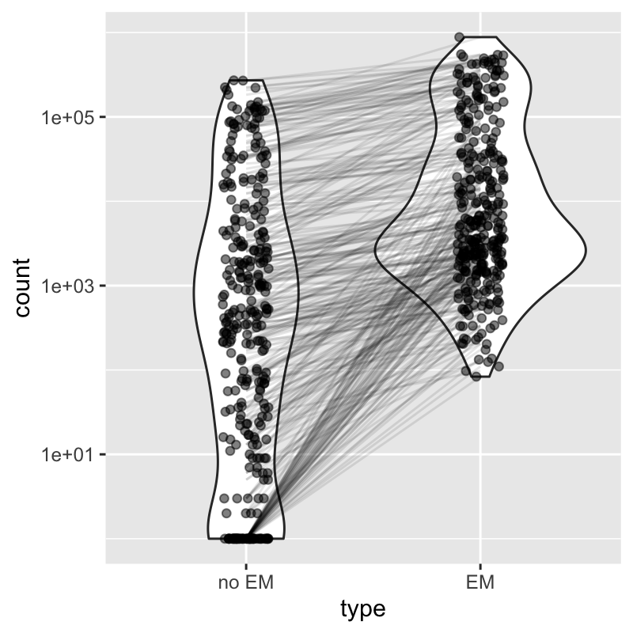
alevin can also attach a measure of uncertainty to each count in the matrix. alevin computes the mean and variance of inferential replicates which are generated by bootstrapping the read data. tximeta will import these inferential mean and variance matrices by default (they are also sparse, similar to the counts matrix). The developers of alevin and fishpond have recently examined the use of the compressed inferential uncertainty matrices in various single-cell analysis tasks, including DE and trajectory analysis (Van Buren et al. 2020).
We will first visualize the uncertainty, and later give an example of a set of genes where the uncertainty is indicating significant quantification uncertainty which is useful to consider when performing EDA (exploratory data analysis) or statistical analysis.
For a later demonstration of scaling, we will sort the cells by the total count (this is not something you would necessarily do in a typical analysis).
We can now use a plotting function plotInfReps from the fishpond package in order to plot the inferential mean and variance for the cells, for various genes.
library(fishpond) plotInfReps(sce, idx="ENSG00000167286.9", x="cluster", mainCol="SYMBOL", legend=TRUE)
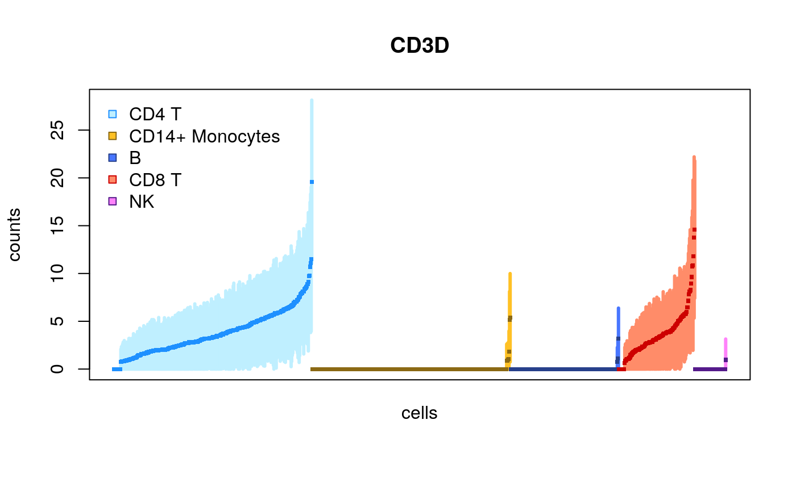
Here, we have x as a grouping variable for coloring the points, one can also specify x to be a continuous covariate, e.g. pseudo-time. An additional covariate cov can be used for additional grouping, e.g. batches, donors or lineages.
Here we show the same plot but now subsetting the number of cells:
set.seed(1) idx <- sample(ncol(sce),200) plotInfReps(sce[,idx], idx="ENSG00000167286.9", x="cluster", mainCol="SYMBOL", legend=TRUE)
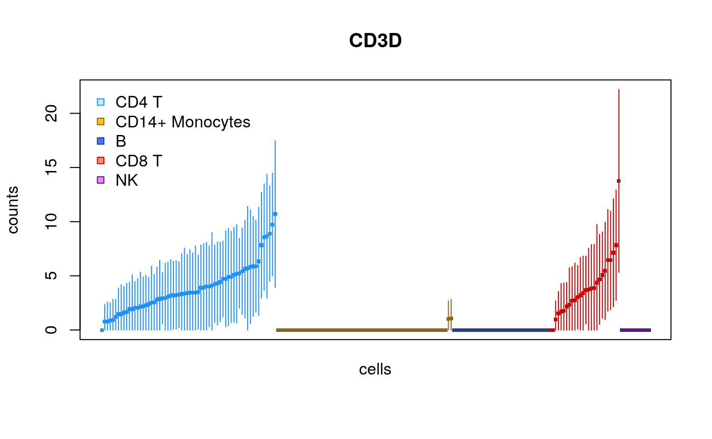
This time only 100 cells:
idx <- sample(ncol(sce),100) plotInfReps(sce[,idx], idx="ENSG00000167286.9", x="cluster", mainCol="SYMBOL", legend=TRUE)
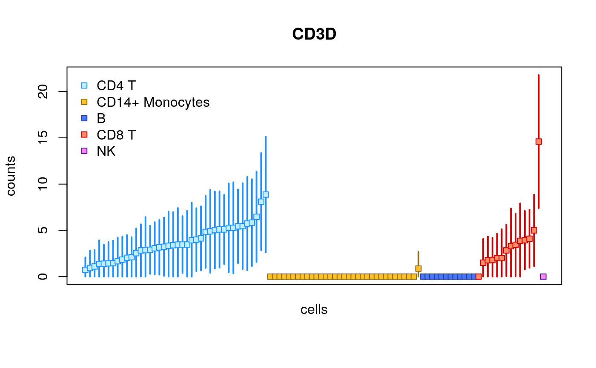
The plots change their features across different sample sizes for ease of viewing the uncertainty of quantification for individual cells.
We can also choose to plot the cells in their original order (the default for scRNA-seq is to sort by the mean value):
plotInfReps(sce, idx="ENSG00000167286.9", x="cluster", mainCol="SYMBOL", reorder=FALSE)
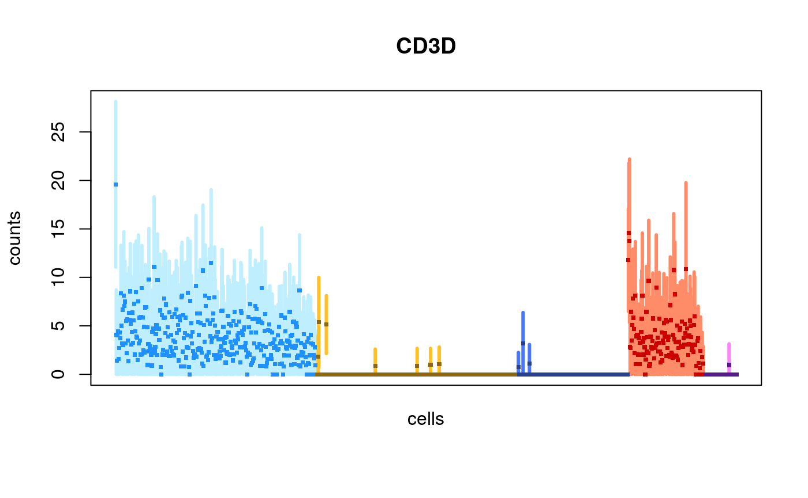
Scaling with size factors
We use computeSumFactors (Lun, Bach, and Marioni 2016) from the scran package (A. T. L. Lun, McCarthy, and Marioni 2016) to compute size factors that are stored in sizeFactors(sce).
library(scran) sce <- computeSumFactors(sce, clusters=sce$cluster) plot(cs, sizeFactors(sce), xlab="column sum", ylab="sum factor")
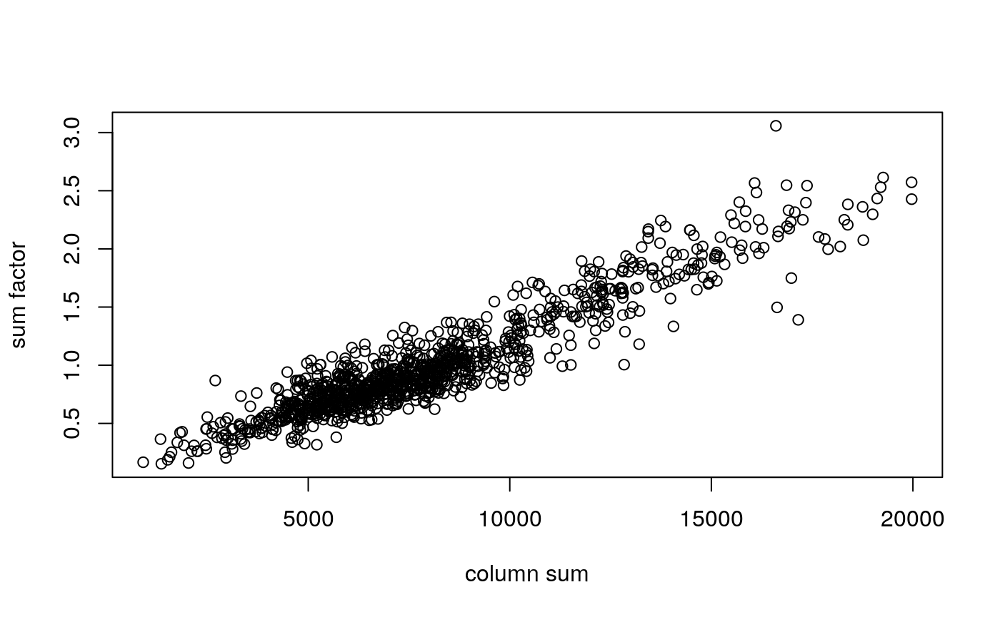
Now we demonstrate un-scaled counts and counts scaling with size factors just computed. (Note in the second plot that the first cell in each group isn’t the highest anymore.)
par(mfrow=c(2,1), mar=c(2.5,4.5,1,1)) plotInfReps(sce, idx="ENSG00000167286.9", x="cluster", main="", reorder=FALSE) plotInfReps(sce, idx="ENSG00000167286.9", x="cluster", main="", applySF=TRUE, reorder=FALSE)
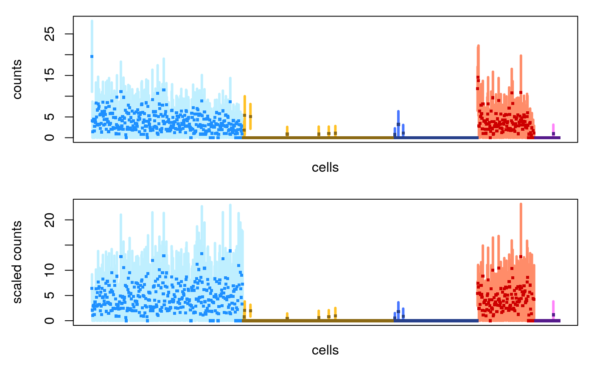
Inferential variance (uncertainty)
In this second to last section, we will briefly talk about how the inferential uncertainty as stored in the variance assay may be useful in practice.
Many users may prefer to just work with the counts matrix, and not consider the inferential mean and variance. We have found that, globally, this may not lead to too much of a problem, but for certain genes, it may be important to use the inferential variance in cases where it may signal difficult to quantify genes. Inferential uncertainty for bulk and single-cell RNA-seq differential expression was a focus of the Swish nonparametric statistical method (Zhu et al. 2019) which we do not demonstrate here, but one can refer to the vignette of swish for more details (in particular the section on alevin data).
Let’s start by visualizing the uncertainty across all values in the matrix:
var <- as.vector(assays(sce)[["variance"]]) mu <- as.vector(assays(sce)[["mean"]]) idx <- mu > 3 df <- data.frame(log10mean=log10(mu[idx]), log10var=log10(var[idx]))
library(ggplot2) ggplot(df, aes(log10mean, log10var)) + geom_hex(bins=100) + geom_abline(intercept=0, slope=1, col="red")
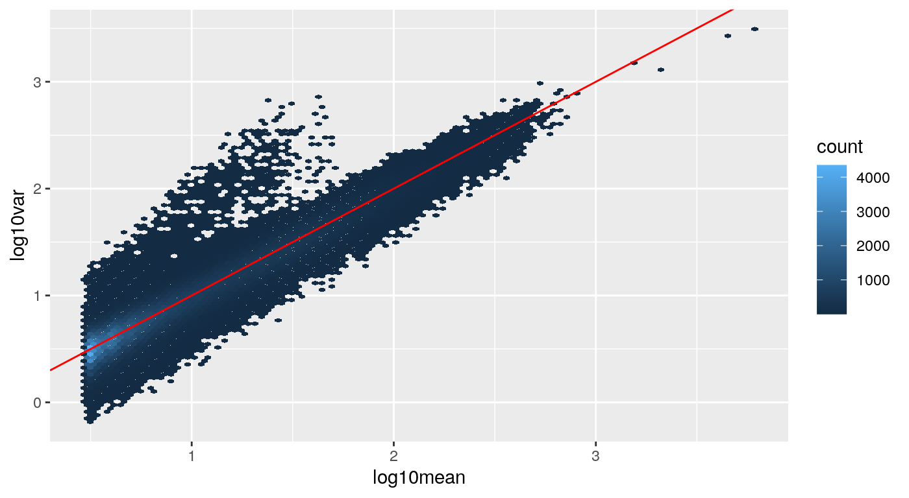
The values around the red line indicate not much uncertainty (bootstrapping reads gives us roughly multinomial, and so also approximately Poisson, variability around the mean count). However we can see a tail of higher uncertainty values in the matrix, where the inferential variance is for example, up to 10 times higher than the mean.
We can also plot this summarized to a single value per gene, here we calculate the 99% quantile of the ratio of variance over mean, per gene, and plot this over the mean:
library(matrixStats) rratio <- rowQuantiles(as.matrix( assays(sce)[["variance"]] / (assays(sce)[["mean"]] + 1)), probs=.99) rmu <- rowMeans(assays(sce)[["mean"]]) idx <- rmu > .1 df <- data.frame(log10mean=log10(rmu[idx]), rratio=rratio[idx], gene=mcols(sce)$SYMBOL[idx])
A number of genes have a ratio above 2, but then two genes in this dataset stand out above the rest, and they happen to be a ribosomal gene, and another gene that is a read-through of the same locus:
with(df, plot(log10mean, rratio)) high.uncert <- which(df$rratio > 10) with(df[high.uncert,], points(log10mean, rratio, pch=20, col="red")) with(df[high.uncert,], text(log10mean, rratio, gene, pos=c(2,4)))
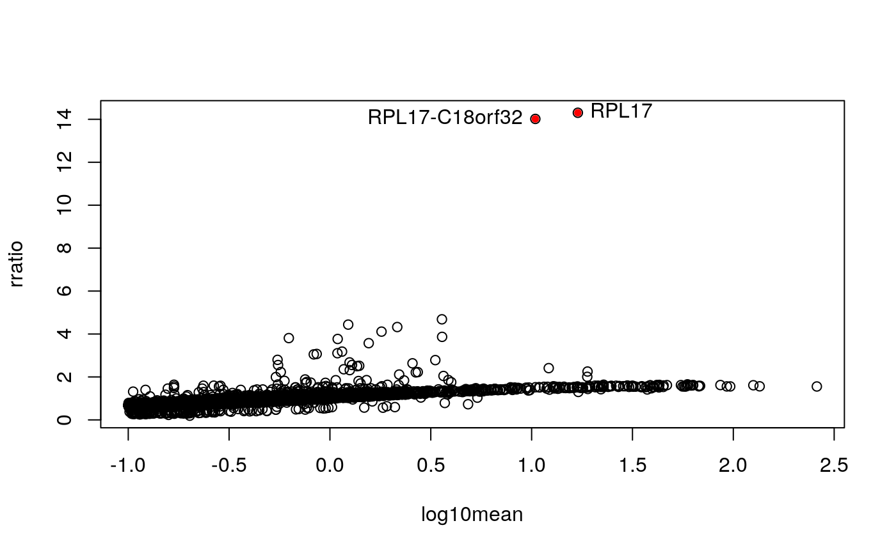
mcols(sce)$SYMBOL[idx][high.uncert]
## ENSG00000215472 ENSG00000265681
## "RPL17-C18orf32" "RPL17"Some of the counts for the ribosomal gene and its read-through:
par(mfrow=c(2,1), mar=c(2.5,4.5,1,1)) plotInfReps(sce[,1:100], idx="ENSG00000265681.7", x="cluster", mainCol="SYMBOL") plotInfReps(sce[,1:100], idx="ENSG00000215472.10", x="cluster", mainCol="SYMBOL")
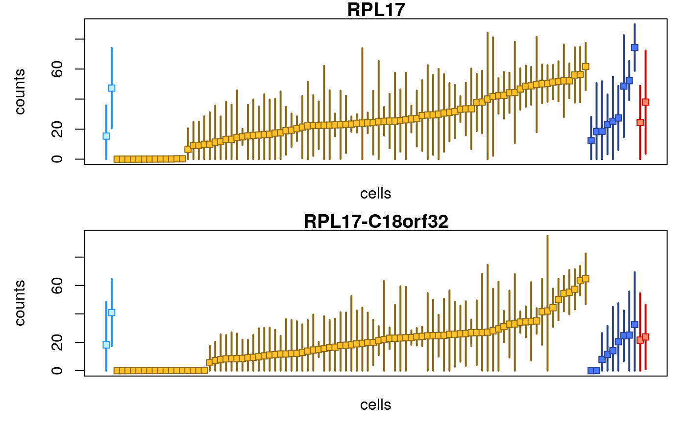
The extra uncertainty on the counts for this gene indicate that alevin was not certain if the reads should come from the gene or its read-through. While in this case, the ribosomal gene may not be over interest, there are other cases (e.g. developmental or immune genes with high sequence homology) where information of the uncertainty of quantification can be useful in interpreting the data. Such examples are provided in a recent preprint from the alevin and fishpond team (Van Buren et al. 2020).
Downstream analysis with Seurat
As we previously showed how to construct a SingleCellExperiment which can be used with other Bioconductor workflows, we also demonstrate how it is easy to convert the sce object into an object for use with the Seurat R package (Stuart et al. 2019) for single-cell analysis. As we noted, Seurat was already used to identify the cell types (with the script stored in inst/scripts/seurat.R).
We now load Seurat and create a Seurat object:
library(Seurat)
##
## Attaching package: 'Seurat'## The following object is masked from 'package:SummarizedExperiment':
##
## Assayscts <- assays(sce)[["counts"]] pbmc <- CreateSeuratObject(cts)
We can easily create violin plots, for example:
mt.genes <- rownames(sce)[as.logical(seqnames(sce) == "chrM")] pbmc[["percent.mt"]] <- PercentageFeatureSet(pbmc, features=mt.genes) feats <- c("nFeature_RNA", "nCount_RNA", "percent.mt") VlnPlot(pbmc, features=feats, ncol=3)
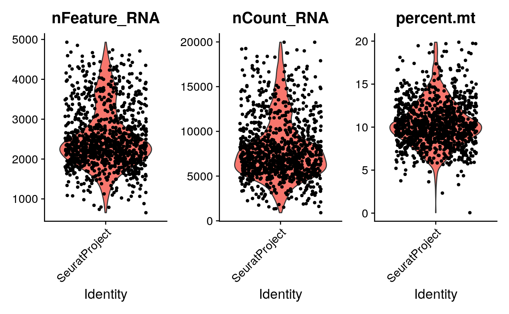
From this point, one can use the pbmc object for use in Seurat workflows, for example, the vignettes on the Seurat website.
Support
For support on this tutorial, feel free to post to https://support.bioconductor.org and tag the post with the appropriate package (e.g. tximeta if the question is particular to the tximeta import aspect). If you are asking about a particular function, don’t forget to first read the man page (e.g. ?tximeta), and also check the relevant package vignette for relevant details (e.g. tximeta vignette).
For questions about alevin, first consult the online documentation at these links
https://combine-lab.github.io/alevin-tutorial/
https://salmon.readthedocs.io/en/latest/alevin.html
You can also find links for seeking further support here:
Session info
## R version 4.0.0 (2020-04-24)
## Platform: x86_64-pc-linux-gnu (64-bit)
## Running under: Ubuntu 18.04.4 LTS
##
## Matrix products: default
## BLAS/LAPACK: /usr/lib/x86_64-linux-gnu/libopenblasp-r0.2.20.so
##
## locale:
## [1] LC_CTYPE=en_US.UTF-8 LC_NUMERIC=C
## [3] LC_TIME=en_US.UTF-8 LC_COLLATE=en_US.UTF-8
## [5] LC_MONETARY=en_US.UTF-8 LC_MESSAGES=C
## [7] LC_PAPER=en_US.UTF-8 LC_NAME=C
## [9] LC_ADDRESS=C LC_TELEPHONE=C
## [11] LC_MEASUREMENT=en_US.UTF-8 LC_IDENTIFICATION=C
##
## attached base packages:
## [1] stats4 parallel stats graphics grDevices utils datasets
## [8] methods base
##
## other attached packages:
## [1] Seurat_3.2.0 ggplot2_3.3.2
## [3] scran_1.17.9 fishpond_1.5.35
## [5] org.Hs.eg.db_3.11.4 SingleCellExperiment_1.11.6
## [7] SummarizedExperiment_1.19.6 DelayedArray_0.15.7
## [9] matrixStats_0.56.0 Matrix_1.2-18
## [11] tximeta_1.7.6 GenomicFeatures_1.41.2
## [13] AnnotationDbi_1.51.1 Biobase_2.49.0
## [15] GenomicRanges_1.41.5 GenomeInfoDb_1.25.8
## [17] IRanges_2.23.10 S4Vectors_0.27.12
## [19] BiocGenerics_0.35.4
##
## loaded via a namespace (and not attached):
## [1] reticulate_1.16 tidyselect_1.1.0
## [3] RSQLite_2.2.0 htmlwidgets_1.5.1
## [5] grid_4.0.0 BiocParallel_1.23.2
## [7] Rtsne_0.15 munsell_0.5.0
## [9] codetools_0.2-16 ica_1.0-2
## [11] statmod_1.4.34 future_1.18.0
## [13] miniUI_0.1.1.1 withr_2.2.0
## [15] colorspace_1.4-1 knitr_1.29
## [17] ROCR_1.0-11 tensor_1.5
## [19] listenv_0.8.0 labeling_0.3
## [21] tximport_1.17.2 GenomeInfoDbData_1.2.3
## [23] polyclip_1.10-0 bit64_0.9-7.1
## [25] farver_2.0.3 rprojroot_1.3-2
## [27] vctrs_0.3.2 generics_0.0.2
## [29] xfun_0.15 BiocFileCache_1.13.0
## [31] R6_2.4.1 rsvd_1.0.3
## [33] locfit_1.5-9.4 AnnotationFilter_1.13.0
## [35] bitops_1.0-6 spatstat.utils_1.17-0
## [37] assertthat_0.2.1 promises_1.1.1
## [39] scales_1.1.1 gtable_0.3.0
## [41] globals_0.12.5 goftest_1.2-2
## [43] ensembldb_2.13.1 rlang_0.4.7
## [45] splines_4.0.0 rtracklayer_1.49.3
## [47] lazyeval_0.2.2 hexbin_1.28.1
## [49] BiocManager_1.30.10 yaml_2.2.1
## [51] reshape2_1.4.4 abind_1.4-5
## [53] backports_1.1.8 httpuv_1.5.4
## [55] tools_4.0.0 ellipsis_0.3.1
## [57] RColorBrewer_1.1-2 ggridges_0.5.2
## [59] Rcpp_1.0.5 plyr_1.8.6
## [61] progress_1.2.2 zlibbioc_1.35.0
## [63] purrr_0.3.4 RCurl_1.98-1.2
## [65] prettyunits_1.1.1 rpart_4.1-15
## [67] openssl_1.4.2 deldir_0.1-28
## [69] pbapply_1.4-2 cowplot_1.0.0
## [71] zoo_1.8-8 ggrepel_0.8.2
## [73] cluster_2.1.0 fs_1.4.2
## [75] magrittr_1.5 data.table_1.12.8
## [77] lmtest_0.9-37 RANN_2.6.1
## [79] ProtGenerics_1.21.0 fitdistrplus_1.1-1
## [81] hms_0.5.3 patchwork_1.0.1
## [83] mime_0.9 evaluate_0.14
## [85] xtable_1.8-4 XML_3.99-0.4
## [87] gridExtra_2.3 compiler_4.0.0
## [89] biomaRt_2.45.2 tibble_3.0.3
## [91] KernSmooth_2.23-17 crayon_1.3.4
## [93] htmltools_0.5.0 mgcv_1.8-31
## [95] later_1.1.0.1 tidyr_1.1.0
## [97] DBI_1.1.0 dbplyr_1.4.4
## [99] MASS_7.3-51.6 rappdirs_0.3.1
## [101] igraph_1.2.5 pkgconfig_2.0.3
## [103] pkgdown_1.5.1 GenomicAlignments_1.25.3
## [105] plotly_4.9.2.1 scuttle_0.99.11
## [107] dqrng_0.2.1 XVector_0.29.3
## [109] stringr_1.4.0 digest_0.6.25
## [111] sctransform_0.2.1 RcppAnnoy_0.0.16
## [113] spatstat.data_1.4-3 Biostrings_2.57.2
## [115] rmarkdown_2.3 leiden_0.3.3
## [117] uwot_0.1.8 edgeR_3.31.4
## [119] DelayedMatrixStats_1.11.1 curl_4.3
## [121] shiny_1.5.0 Rsamtools_2.5.3
## [123] gtools_3.8.2 lifecycle_0.2.0
## [125] nlme_3.1-148 jsonlite_1.7.0
## [127] BiocNeighbors_1.7.0 desc_1.2.0
## [129] viridisLite_0.3.0 askpass_1.1
## [131] limma_3.45.9 pillar_1.4.6
## [133] lattice_0.20-41 fastmap_1.0.1
## [135] httr_1.4.1 survival_3.2-3
## [137] interactiveDisplayBase_1.27.5 glue_1.4.1
## [139] spatstat_1.64-1 png_0.1-7
## [141] BiocVersion_3.12.0 bit_1.1-15.2
## [143] stringi_1.4.6 blob_1.2.1
## [145] BiocSingular_1.5.0 AnnotationHub_2.21.1
## [147] memoise_1.1.0 dplyr_1.0.0
## [149] irlba_2.3.3 future.apply_1.6.0
## [151] ape_5.4References
“1k Pbmcs from a Healthy Donor (V2 Chemistry).” n.d. https://support.10xgenomics.com/single-cell-gene-expression/datasets/3.0.0/pbmc_1k_v2.
Amezquita, Robert A., Aaron T. L. Lun, Etienne Becht, Vince J. Carey, Lindsay N. Carpp, Ludwig Geistlinger, Federico Marini, et al. 2020. “Orchestrating Single-Cell Analysis with Bioconductor.” Nature Methods 17 (2): 137–45. https://doi.org/10.1038/s41592-019-0654-x.
Frankish, A., GENCODE-consoritum, and P. Flicek. 2018. “GENCODE reference annotation for the human and mouse genomes.” Nucleic Acids Research. https://doi.org/10.1093/nar/gky955.
Lawrence, Michael, Wolfgang Huber, Hervé Pagès, Patrick Aboyoun, Marc Carlson, Robert Gentleman, Martin T. Morgan, and Vincent J. Carey. 2013. “Software for Computing and Annotating Genomic Ranges.” PLOS Computational Biology 9 (8): e1003118+. https://doi.org/10.1371/journal.pcbi.1003118.
Love, Michael I., Charlotte Soneson, Peter F. Hickey, Lisa K. Johnson, N. Tessa Pierce, Lori Shepherd, Martin Morgan, and Rob Patro. 2020. “Tximeta: Reference sequence checksums for provenance identification in RNA-seq.” PLOS Computational Biology. https://doi.org/10.1371/journal.pcbi.1007664.
Lun, Aaron T. L., Karsten Bach, and John C. Marioni. 2016. “Pooling across cells to normalize single-cell RNA sequencing data with many zero counts.” Genome Biology 17 (1): 75. https://doi.org/10.1186/s13059-016-0947-7.
Lun, A. T. L., D. J. McCarthy, and J. C. Marioni. 2016. “A Step-by-Step Workflow for Low-Level Analysis of Single-Cell Rna-Seq Data with Bioconductor.” F1000Research 5: 2122. https://doi.org/10.12688/f1000research.9501.2.
Patro, R., G. Duggal, M. I. Love, R. A. Irizarry, and C. Kingsford. 2017. “Salmon Provides Fast and Bias-Aware Quantification of Transcript Expression.” Nature Methods 14: 417–19. https://doi.org/10.1038/nmeth.4197.
Pijuan-Sala, Blanca, Jonathan A. Griffiths, Carolina Guibentif, Tom W. Hiscock, Wajid Jawaid, Fernando J. Calero-Nieto, Carla Mulas, et al. 2019. “A Single-Cell Molecular Map of Mouse Gastrulation and Early Organogenesis.” Nature 566 (7745): 490–95. https://doi.org/10.1038/s41586-019-0933-9.
Srivastava, Avi, Laraib Malik, Tom Sean Smith, Ian Sudbery, and Rob Patro. 2019. “Alevin efficiently estimates accurate gene abundances from dscRNA-seq data.” Genome Biology 20 (65). https://doi.org/10.1186/s13059-019-1670-y.
Stuart, Tim, Andrew Butler, Paul Hoffman, Christoph Hafemeister, Efthymia Papalexi, William M Mauck III, Yuhan Hao, Marlon Stoeckius, Peter Smibert, and Rahul Satija. 2019. “Comprehensive Integration of Single-Cell Data.” Cell 177: 1888–1902. https://doi.org/10.1016/j.cell.2019.05.031.
Van Buren, S, H Sarkar, A Srivastava, NU Rashid, R Patro, and MI Love. 2020. “Compression of quantification uncertainty for scRNA-seq counts.” bioRxiv. https://doi.org/10.1101/2020.07.06.189639.
Zhu, A., A. Srivastava, J. G. Ibrahim, R. Patro, and M. I. Love. 2019. “Nonparametric expression analysis using inferential replicate counts.” Nucleic Acids Research. https://doi.org/10.1093/nar/gkz622.